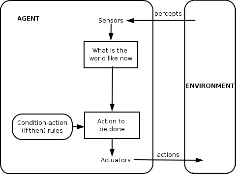

Implementing Magic
If you've read our philosophy and magic documents you'll know that the aim of the system is to reduce the friction between the user and their things. While simple clients usually require a lot of user interaction, effectively turning the steward into a sophisticated remote control for your devices, our philosophy is that more complicated clients probably shouldn't.
The Magic Architecture
Clients that perform "magic", at least from the user's perspective, and are separate stand alone tasks that talks to the steward at the API level — referred to as apprentices. They have no special status with the steward and make use the same APIs as all other clients. However apprentices monitor the steward and then act on event notifications from the devices associated with the steward.
The beauty of this idea is that;
If the internal rule engine gets locked up, it doesn't affect core functionality
If they crash, it doesn't affect core functionality
It forces both us to eat our own dog-food a build a useable API allowing everyone — not just us — to develop intelligent clients that can help end users solve their problems.
Clean separation between magic and core functionality. Which means that individual bits of magic can be separate processes than can be spun up and down at will
Doesn't have to run in the same place as the steward, while they're generally persistent they can make use of the Node Rendezvous service to run remotely, which means they can also make use of remote resources.
The above means that we can write as much, or as little, magic as we like. We can add magic at any time without affecting the core system, and the magic can be turned off and on without affecting the core system. It can also spectacularly crash and so long as the steward is still up, then the user doesn't seem a difference in controlling their hardware directly. Interestingly, it can also be anywhere in the cloud, on a different server, on the user's phone. It doesn't have to run on the same machine as the steward, it can, but it doesn't have to necessarily.

Apprentices are intelligent agents working in a multi-agent system with shared goals of making life more convenient for the user. In the simplest case these can be reflex agents that evaluate current conditions against a set of fixed rules and then perform actions based on those rules.
A case study
For instance as an example, think about light bulbs. You have 40 light Hue bulbs in your house. You have a "magic agent" sitting waiting for a "bulb added" event. It receives such an event, however it also knows that there was a recent "bulb removed" event — or rather that the steward lost contact with one of the Hue bulbs. It figures that this is the replacement bulb and configures it as the previous bulb — talking to the steward via the network API like any other bit of client software. This is a fairly simple piece of rule-based software, however from the user's perspective magic happens as they don't have to configure their new bulb. It gets configured for them.
An example of magic
A simple example apprentice which monitors for high CO2 in an office, and blinks the office lights on and off to alert the user...